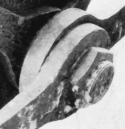
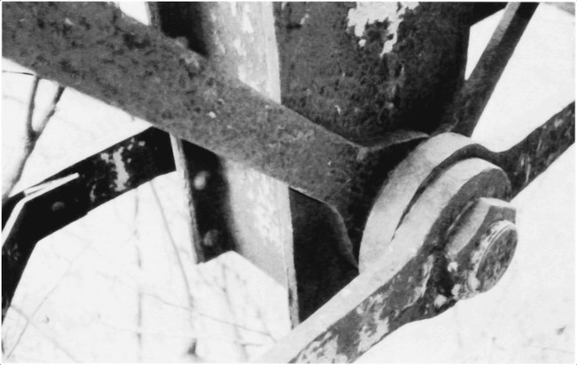
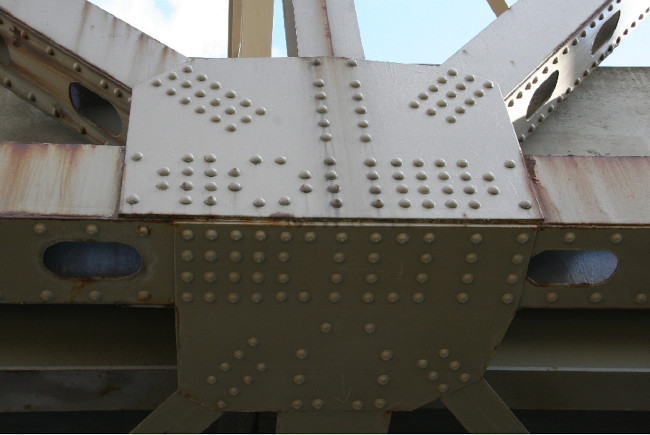

When science and engineering are in conflict: the weird Whipple truss bridge
 Since the 19th century We have come to understand structural engineering as a branch of the physical sciences. Science and mathematics guide and inform all aspects of design, from skyscrapers to nanotechnology.
This has been a staggeringly productive approach; so much so, that it's easy to lose sight of the fact that we humans have been building magnificent, long-lasting structures for thousands of years with no science whatsoever. Our ancient Greek forebears built the Parthenon only a generation after Pythagoras, and a century before Aristotle laid the foundations of experimental science. Two thousand years later, this breathtaking building is largely still standing. So, of course, are the pyramids of Giza and Stonehenge.
How could the ancients do this? Leaving aside the popular theory that our ancestors had help from space aliens, the most plausible explanation is simply: experience. Engineering in the pre-scientific world was entirely pragmatic. Designers and architects did what had been found to work before, and expanded it incrementally, generation by generation. In this way we got from mud huts to the great, soaring cathedrals of the middle ages, with no more math than elementary trigonometry.
Of course, this process took a long, long timer: millennia, in fact. On the other hand, by treating engineering as a science we got from Ulm Minster -- at ~160m the world's tallest building at the end of the 19th century -- to the half-mile tall Burj Khalifa in a mere hundred years.
Science and engineering are now so closely bound together that it's almost impossible to think of one without the other. And yet, science isn't always a friend of engineering. Sometimes, science can lead us to design strategies which, with hindsight, look completely barmy.
To support this odd, counter-intuitive claim, I would like to introduce the pin-joint truss bridge. In the US, this design of bridge was known for a long time as the 'Whipple truss', after Squire Whipple, who patented a design in the mid-19th century. Whipple's design was widely used by a number of US railroad companies, and was almost ubiquitous in some regions.
If you've spent any time around heritage railways -- or, in some regions, modern railways -- you'll have seen railway bridges of the Whipple type (although I don't think that name was ever common in the UK). These bridges have as their characteristic feature steel members held together by giant pins, like this:

On the face of it, these pin joints amount to crazy engineering. Why? Because they offer no redundancy. The entire load of the joined members is carried by the pins, and they are loaded in shear. The shear strength of a material is hard to assess, even in the lab, and much less in real-world conditions.
To compound the problem, the part of the joint that is subject to the heaviest sheer stresses is completely invisible. These days we have ultrasonic imaging equipment that allows us to see into the joint and check for cracking, but there was no such equipment in the 19th century. If a pin sheared, the entire bridge was at risk of collapse.
A more modern way to build a truss bridge is to make the joints using gusset plates, like this:

Rather than a single pin, the load is shared across many smaller bolts or rivets. This design not only offers improved redundancy, the joint elements are reasonably easy to visualize, and individual elements can be repaired or replaced without dismantling the bridge.
People often wonder what purpose the pin joints serve. To be clear, they aren't to allow movement in the structure. A truss bridge is -- or should be -- completely rigid. To be fair, bridge designers do sometimes use moveable pin joints to attach a bridge to its supporting structure, to allow for some movement. But the characteristic feature of the Whipple truss is that all joints are pin joints.
It's not as if 19th-century designers knew of no other way to join bridge members. The world's earliest all-metal bridge -- the Coalbrookdale Iron Bridge -- uses no pins. Pin joints seem to have been a feature of truss bridges in particular.
From the standpoint of engineering experience, or just common sense, it seems that any bridge that could handle its load with pin joints could also handle that load with rigid joints -- and more safely. So why the fascination with pin joints?
This is example of science having an ambiguous relationship with engineering. From a purely scientific perspective, a pin-joint has a huge advantage over any other kind of coupling. If construction members are pin-jointed, they can only transmit load in compression or tension. In particular, no load on the bridge (other than the weight of the construction members themselves) can bend the members.
This means that it's easy to work out the stresses in each member of the bridge -- and by 'easy' I mean that it requires no more than high-school trigonometry. In fact, Squire Whipple didn't even use trigonometry: he worked out the stresses using scale drawings of the size and directions of the loading forces.
This approach was called the 'method of joints'. To apply the method, we start at some point on the bridge where all but two of the loading forces are known -- probably at one end. Since we know that there can be no net horizontal or vertical force on the joint (else the bridge would be in motion) we can sum the forces in each direction to get two equations for forces in balance. Solving these equations gives us the two unknown forces. With these forces known, we can proceed to apply the same process to the adjacent joints, one by one. Eventually, we can determine all the stresses in all the members. From this we can choose materials and sizes that will handle these stresses. It's important to understand that there are no approximations here: the load-related forces can be determined exactly if we know the load the bridge has to carry. And, of course, if the bridge can be constructed to match the mathematical analysis we have used.
Whipple's method of joints only works if the members are joined by perfect frictionless pins. Any other kind of joint can transmit load in bending. Whipple did not have the math to work out the stress in bridge members that are subject to bending forces. In fact, I'm not sure we do today, either -- in practice we would probably use a computer to apply finite-element analysis to a problem of this kind.
When Squire Whipple was designing bridges in the mid 19th-century, the scientific approach to engineering was still somewhat in its infancy. Whipple's method of joints allowed a precise calculation of the load-related stresses, which in turn allowed for smaller, less expensive structural members. Without this scientific approach, we would simply have had to use over-sized construction members -- the Forth Bridge is a good example of this approach.
Unfortunately, applying the method of joints required engineers to construct bridges to match their mathematical models, rather than the other way around. The math only works for perfect frictionless pins, so they had to approximate perfect frictionless pins in their constructions, however unsafe that was. The result was the rapid proliferation, all over the US and elsewhere, of bridges with no redundancy in their construction. It's as if passenger aircraft all had only a single engine, because we couldn't do the math for a multi-engine design.
The method of joints is correctly considered a major landmark on the path to scientific engineering. We've made many advances since Whipple's day, and it's now almost inconceivable that we would undertake any major engineering project without a good understanding of the science.
And yet... Whipple's method could have been catastrophic. Despite their 19th-century popularity, nobody's building pin-joint truss bridges any more -- except garden railway modelling enthusiasts.
If this situation makes you feel equivocal about the relationship between science and engineering, it should. Of course science is the foundation of modern engineering, but that's not a good reason to abandon common sense and experience.